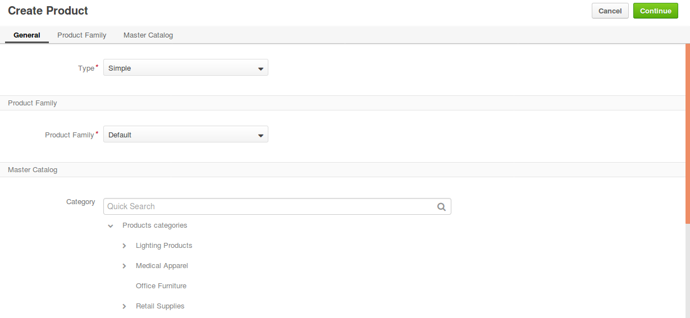

Create a Configurable Product¶
See a short demo on how to create a configurable product, or keep reading the step-by-step guidance below.
Checklist¶
Prior to creating a configurable product, ensure that you have performed the following steps:
Created attributes.
A configurable attribute is one of the product attributes that are used to distinguish product variants of the same configurable product. There should be at least one configurable attribute specified for the configurable product in order to enable a customer to select product variants.
Created a product family.
As a configurable product and all of its variants share the same set of attributes, they should share the product family as well.
Created product variants (simple products).
A configurable product may group several simple products, or configurable product variants whose information mostly overlaps except for several product attributes. It means that you have to create a simple product for each variant that you need to add to the configurable product.
Flow¶
To add a new configurable product and make it available in the master catalog (for internal product management) and for purchase in the front store:
Navigate to Products > Products using the main menu.
Click Create Product.
From the Type list, select Configurable to enable product variants.
Select the product family to define the product options and details that will be filled in the following steps.
Note
Ensure that the product attributes that store product variant options are created and included into the product’s product family.
Place the product under the necessary category in the master catalog by clicking on the category. Use search to filter the list of categories.
Click Continue. The product details page appears.
In the General section, provide the following information:
Field Description Owner Limits the list of users who can manage the product. SKU Enter the product SKU number. The field is mandatory. Name Enter the name of the product. The field is mandatory. Configurable Attributes Define the configurable attributes that distinguish product variants by selecting the check boxes next to them.
Note
A configurable product should contain at least one configurable attribute of select or boolean type.

Status Select the product status (e.g. Enabled/Disabled). When disabled, the product is not included into the catalog and is considered to be a draft. The field is mandatory. URL Slug Enter a URL slug that is used to build a human-readable URL for the product page in the front store. If left blank, the slug will be autogenerated. Is Featured Select whether the product is featured. The field is mandatory. New Arrival Select whether the product is a new arrival. When set to Yes, the product is highlighted in the front store. The field is mandatory. Description Enter product description. A description is a detailed information about the product that shows on the product view. Short Description Enter a short description to be displayed in the catalog listing. Use the WISIWIG editor to format the information. Brand Choose the product brand, if available. Click to select the brand from the full list. Also specify the value of your configurable attributes and define any other custom attributes if required.
In the Image section, add a new image to the product by clicking +Add Image and uploading the necessary file. You can select whether the image will be shown as main (the image is used in the product details view), listing (the image is shown in the catalog listing), or additional (additional product pictures). All three categories can be selected at the same time. To remove an image, click next to it.
In the SEO section, specify the required attributes:
Field Description Meta Keywords Enter meta keywords for the product. A meta keyword is a specific type of a meta tag that appears in the HTML code of a web page and helps search engines to understand what the topic of the page is. Meta Title Enter a meta title for the product. A meta title is what is seen by search engine users and helps a search engine to index the page. Meta Description Enter a meta description for the product. A meta description summarizes the page content. Search engines show a meta description in search results when the searched phrase is found in the description. And any other custom attributes if defined.
In the Design section, select the page template from the list.
Note
You might want to save the product at this point to make sure that product variants are loaded for the next step.
In the Product Variants section, select the configurable product variants by ticking the Is Variant check box next to the product.

Review translation rules for a product name, URL slug, description and short description.
To enter a translation manually, click , clear the Use <parent translation> check box next to the required language, and provide your version of the translation.

Click Save to save your configurable product.
Sample Configurable Product¶
The sample flow below shows all steps required for the creation of a configurable product.
Product: Red and green hats, sizes S and M.
Step 1. Create Attributes.
Navigate to Products > Product Attributes in the main menu.
Click Create Attribute on the top right.
We will create two attributes, one after another: ‘HatColor’ and ‘HatSize’.
Select the type of an attribute.
Currently Select and Boolean types are available for configurable attributes. We will use Select for both attributes.
Fill in required information and add the necessary options for the attributes by clicking +Add.
For ‘HatColor’, attribute options will be ‘Red’ and ‘Green’.
For ‘HatSize’, attribute options will be ‘S’ and ‘M’.
Click Save to save the attributes.
Step 2. Create a Product Family.
Navigate to Products > Product Families in the main menu.
Click Create Product Family in the top right corner.
Fill in required information and add attributes ‘HatColor’ and ‘HatSize’ to the attribute group by clicking +Add.
Each attribute must have a separate group in our case.
Click Save to save the product family.
Step 3. Create Configurable Product Variants.
We now need to create one configurable product variant (simple product) per each variant that we would like to have available in the configurable product. Since we have two attributes, ‘HatSize’ and ‘HatColor’, and each attribute has two options (‘S’/’M’ for the first and ‘Red’/’Green’ for the second), we need to create four simple products.
Navigate to Products > Products in the main menu.
Click Create Product in the top right corner.
Set the product type to Simple, select the ‘HATS’ product family.
Fill in required information and add attributes required for this particular product.
Click Save.
Perform step 3 for all four simple products.
Note
Make sure that all your simple products are enabled.
Step 4. Create a Configurable Product.
Navigate to Products > Products in the main menu.
Click Create Product.
Set the product type to Configurable.
Select the category.
Note
Choosing category is mandatory at this stage, as it determines whether the product is available on the website.
Choose the ‘Hats’ product family.
Add ‘HatSize’ and ‘HatColor’ attributes to the product.
Fill in required information and add the created product variants for this configurable product.
Note
You might want to save the product at this point to make sure that product variants are available in the Product Variants section of the product you are creating.
Click Save.

The product should now be available on the website in the category we have previously assigned it to.